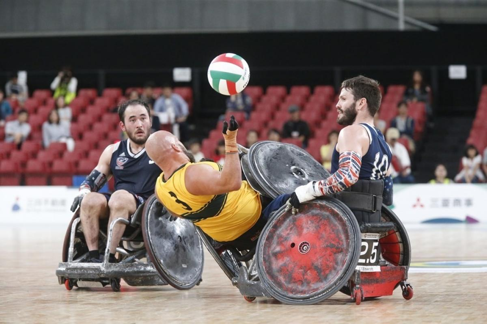

Wheelchair rugby was first contested at the Summer Paralympics as a demonstration sport in 1996. It became an
official medal-awarding sport in 2000 and has been competed at every Summer Paralympics since then. Only one
event, mixed team, is held.
Four nations - United States, Canada, Australia and Great Britain have appeared in every wheelchair rugby
Paralympic tournament since its introduction. The 1996 tournament was considered a demonstration event, but
unlike the Olympics, medals were awarded and counted in the main medals table.

WheelChair Rugby
Classifications
Sport class 0.5 Players have significantly limited function in their shoulder,
arms and hands, for example due to tetraplegia. The player would typically catch the ball by
tapping it into their lap and throwing the ball with a scoop pass. Their main role on the
court is as a blocker.
Sport class 1.5 A player has fair arm function, which makes him or her an
excellent blocker. A 1.5 player will also handle the ball on occasion, but typically they
show some instability in the wrist, which leads to limited ball security.
Sport class 2.5 Players in this sport class have good shoulder stability and arm
function. They might have some trunk control. Due to their ability to flex their fingers,
they can perform overhead passes, catch the ball with two hands and maneuver the wheelchair
effectively. In the team they are ball handlers and fairly fast playmakers.
Originally known as murderball, and called quad rugby in the United States, wheelchair rugby incorporates
aspects of able-bodied rugby, alongside elements of basketball and handball. The sports men and women use manual
wheelchairs to get around the hardwood court, and men and women compete together on the same teams.
The aim of wheelchair rugby is for players to carry the ball across the line of their opponents, using brute
force when necessary! Wheelchair rugby players also use their wheelchairs to block opposing players and prevent
them from scoring, however, physical contact between players is not allowed. Anybody who has ever watched a game
will find their perceptions of disabled people challenged; this is a rough and tough sport and there’s no time
for playing gently!
Wheelchair rugby is now a Paralympic sport, but was first invented in Canada in 1977, as a way of getting
quadriplegic athletes involved in sport. It spread from Canada to the US, and is now an international sport
played in 26 countries.